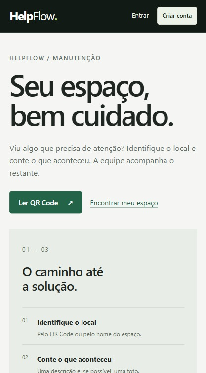
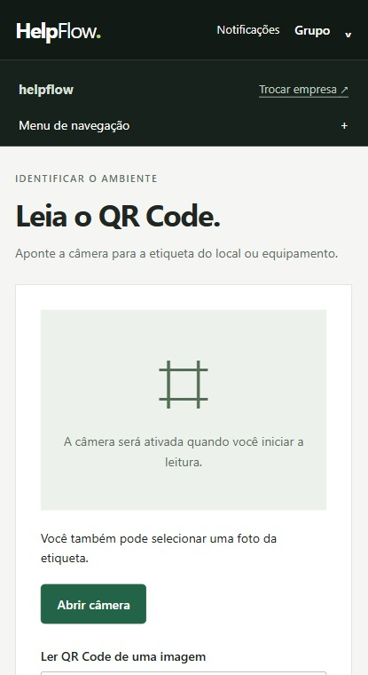
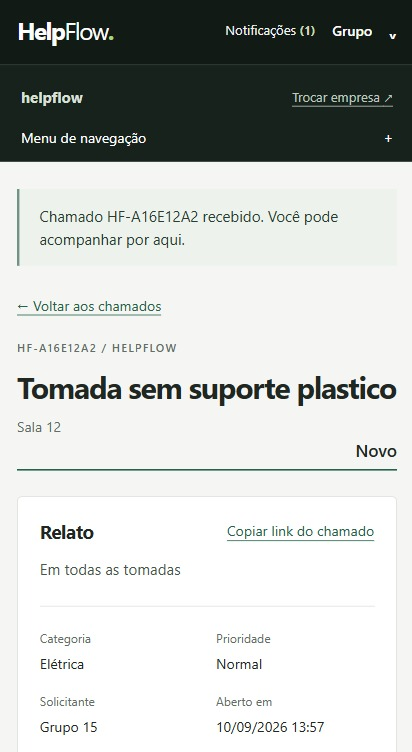
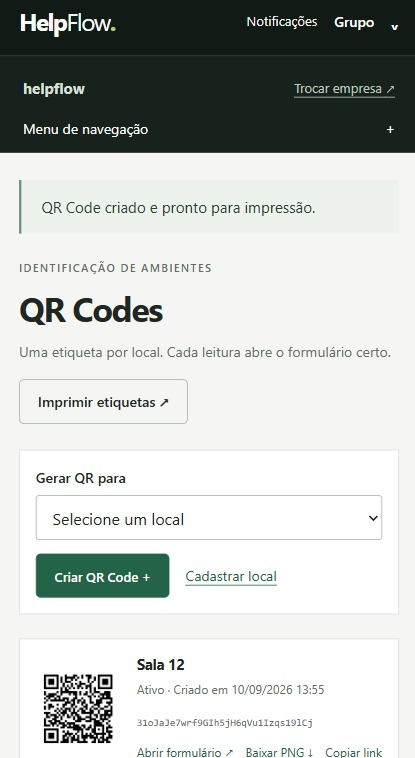
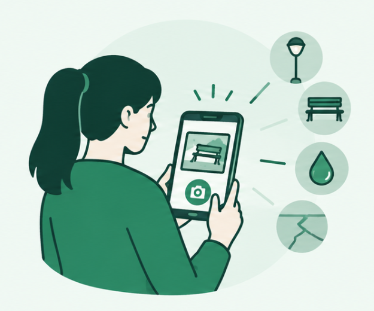
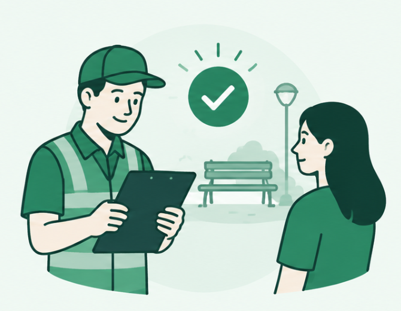
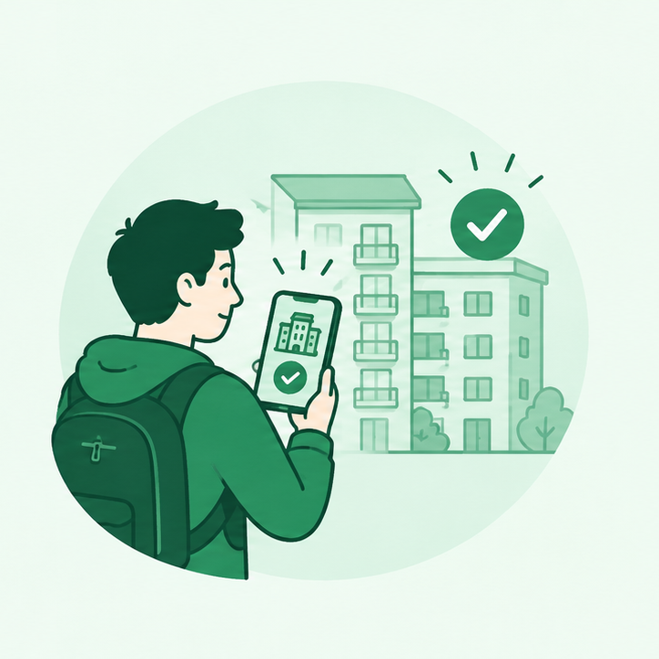
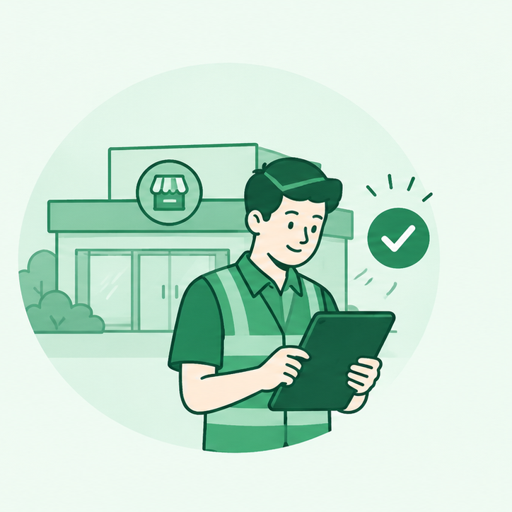

Menos tempo perdido
O relato chega completo, com local e foto. Chega de "onde é isso?".
O HelpFlow coloca um QR Code em cada sala, banheiro ou equipamento. Quem vê o defeito abre o chamado em 30 segundos, e você acompanha tudo até a conclusão, sem grupo de WhatsApp.

O problema: o defeito é visto por muita gente, mas o aviso se perde em conversas, e ninguém sabe se já foi resolvido.
A solução: um único lugar onde cada relato vira chamado, com responsável, prazo e status.
Telas reais do aplicativo: identificar o local, acompanhar o chamado e gerar as etiquetas.



A primeira versão já cobre o caminho completo, da etiqueta ao chamado resolvido.
Do QR Code colado na parede até o problema resolvido, em três passos.
Cadastre cada sala, banheiro ou equipamento no painel e gere uma etiqueta única. Imprima, cole no lugar e pronto: o código já sabe onde está.

Quem vê o defeito aponta a câmera para o QR Code. O formulário abre já no local certo, e ela só escolhe o tipo de problema, descreve e envia.

Cada chamado ganha um código próprio, como HF-A16E12A2, com status, prioridade e histórico. Quem avisou vê a resolução sem precisar perguntar.
O relato chega completo, com local e foto. Chega de "onde é isso?".
Todo chamado tem status e histórico. Quem avisou sabe o que aconteceu.
Veja o que está atrasado, onde os problemas se repetem e o desempenho dos prestadores.
Muitas salas, banheiros e pátios, e poucas pessoas para olhar tudo. Com o HelpFlow, quem passa pelo local avisa na hora.

Moradores e porteiros enxergam os problemas antes do síndico. O HelpFlow transforma cada aviso em um chamado registrado.

Lojas, escritórios e filiais precisam de manutenção rápida para não parar a operação. Cada unidade tem seus locais e chamados.
Deixe seus dados e entraremos em contato para uma demonstração e para liberar um teste gratuito.
Obrigado, . Vamos falar com você em até 1 dia útil.